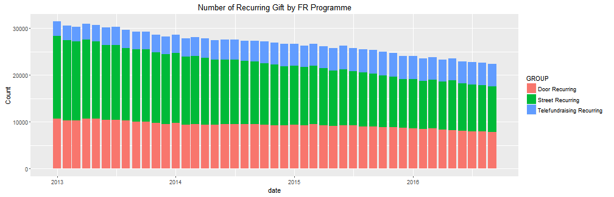

Introducing R
R is a programming language for statistical computing
khskshdkfjh
kdfhkhdfkhsd
skdfkhsfkh
Martin Hou
Data Specialist
shiny dashboard: integrate analysis output to dashboard and share with otherssummary(cars)
## speed dist
## Min. : 4.0 Min. : 2.00
## 1st Qu.:12.0 1st Qu.: 26.00
## Median :15.0 Median : 36.00
## Mean :15.4 Mean : 42.98
## 3rd Qu.:19.0 3rd Qu.: 56.00
## Max. :25.0 Max. :120.00
R Connectivity
read.table()read.csv()odbcConnect("ServerName", uid = "UserName", pwd = "Password")readOGR()RNeo4j Load a txt file into R
df <- read.table("X:\\Box Sync\\Fundraising\\Analysis\\Martin\\Bangkok_Skillshare\\Data\\SMS.txt",
header = T,
sep = "\t")
Warning in file(file, "rt"): cannot open file 'X:\Box Sync\Fundraising
\Analysis\Martin\Bangkok_Skillshare\Data\SMS.txt': No such file or
directory
Error in file(file, "rt"): cannot open the connection
head(df)
1 function (x, df1, df2, ncp, log = FALSE)
2 {
3 if (missing(ncp))
4 .Call(C_df, x, df1, df2, log)
5 else .Call(C_dnf, x, df1, df2, ncp, log)
6 }
Load a csv file into R
df <- read.csv("X:\\Box Sync\\Fundraising\\Analysis\\Martin\\Bangkok_Skillshare\\Data\\SMS.csv",
header = T,
stringsAsFactors = F)
Warning in file(file, "rt"): cannot open file 'X:\Box Sync\Fundraising
\Analysis\Martin\Bangkok_Skillshare\Data\SMS.csv': No such file or
directory
Error in file(file, "rt"): cannot open the connection
head(df)
1 function (x, df1, df2, ncp, log = FALSE)
2 {
3 if (missing(ncp))
4 .Call(C_df, x, df1, df2, log)
5 else .Call(C_dnf, x, df1, df2, ncp, log)
6 }
library(RODBC)
RE_connect <- odbcConnect("RE7", uid = "SSRS", pwd = "xH^SfWJ2R4")
gift <- sqlQuery(RE_connect,
query = "
select RECORDS.CONSTITUENT_ID, ...Truncated
where GIFT.DTE between '2016-09-01' and '2016-09-30'
and GIFT.TYPE in (31) and (FUND.FUND_ID like '%AQ-PHONE%' or FUND.FUND_ID like '%AQ-DDC%')
")
head(gift)
Error in sqlQuery(RE_connect, query = "\n select RECORDS.CONSTITUENT_ID,\n GIFT.DTE,\n GiftSplit.Amount,\n GIFT.TYPE,\n APPEAL.APPEAL_ID,\n FUND.FUND_ID,\n case \n when APPEAL.APPEAL_ID like 'DDC%' then 'Street Recurring'\n when APPEAL.APPEAL_ID like 'DTD%' then 'Door Recurring'\n else 'Telefundraising Recurring'\n end as [GROUP] \n from GiftSplit\n left join GIFT\n on GiftSplit.GiftId = GIFT.ID\n left join APPEAL\n on GiftSplit.AppealId = APPEAL.ID\n left join FUND\n on GiftSplit.FundId = FUND.ID\n left join RECORDS\n on GIFT.CONSTIT_ID = RECORDS.ID\n where GIFT.DTE between '2013-01-01' and '2016-09-30'\n and GIFT.TYPE in (31)\n and (FUND.FUND_ID like '%AQ-PHONE%' \n or FUND.FUND_ID like '%AQ-DDC%')\n "): first argument is not an open RODBC channel
Error in head(gift): object 'gift' not found
Shapefile and raster data can be imported into R
library(rgdal)
london.shp <- readOGR(dsn = "X:\\Box Sync\\Fundraising\\Analysis\\Martin\\Bangkok_Skillshare\\Data\\ESRI",
layer = "London_Borough_Excluding_MHW")
plot(london.shp)
## Error in library(rgdal): there is no package called 'rgdal'
## Error in eval(expr, envir, enclos): could not find function "readOGR"
## Error in eval(expr, envir, enclos): object 'london.shp' not found
## Error in plot(london.shp): object 'london.shp' not found
library(raster)
World.Temp <- getData('worldclim', var = 'tmax', res = 10)
plot(World.Temp)
R data manipulation
Base function like aggregate() gives us the ability to aggregate raw data without using any external packages.
However aggregate() is not really efficient when dataset gets larger and aggregation becomes complex.
start.time <- Sys.time()
gift.ag1 <- as.data.frame(as.list(aggregate(Amount ~ Year + month + GROUP,
data = gift,
FUN = function(x) c(Count = length(x), Average = mean(x), Total = sum(x)))
)
)
Sys.time() - start.time
Time difference of 2.710633 secs
Year month GROUP Amount.Count Amount.Average Amount.Total
1 2013 1 Door Recurring 10648 16.94191 180397.5
2 2014 1 Door Recurring 9753 18.46033 180043.6
3 2015 1 Door Recurring 9383 19.80147 185797.2
4 2016 1 Door Recurring 8614 20.28150 174704.9
5 2013 2 Door Recurring 10264 17.15470 176075.8
6 2014 2 Door Recurring 9370 18.67224 174958.9
Using external packages like library(data.table) can really solve the efficiency problem.
When dealing with large data aggregation, it can shrink the time significantly.
Other packages like dplyr, reshape2 can also help aggregate data for different purposes
library(data.table)
load("F:\\Software backup\\gift.RData")
start.time <- Sys.time()
gift.dt <- data.table(gift)
gift.ag <- gift.dt[,list(Count = length(Amount),
Average = mean(Amount),
Total = sum(Amount)),
by = list(Year, month, GROUP)]
Sys.time() - start.time
Time difference of 0.1627851 secs
Year month GROUP Count Average Total
1: 2014 3 Telefundraising Recurring 4037 24.68985 99672.92
2: 2014 3 Door Recurring 9486 18.59677 176408.92
3: 2014 3 Street Recurring 14565 15.40297 224344.26
4: 2014 4 Street Recurring 14246 15.17175 216136.76
5: 2014 4 Door Recurring 9448 18.27036 172618.36
6: 2014 4 Telefundraising Recurring 4125 24.63313 101611.67
R data visualization
+) layers on the canvas
library(ggplot2)
gift.ag <- gift.ag[order(gift.ag$GROUP, descending = FALSE),]
ggplot(data = gift.ag , aes(x=date, y=Count, fill = GROUP)) +
geom_bar(stat = "identity") +
ggtitle("Number of Recurring Gift by FR Programme")

library(googleVis)
options(gvis.plot.tag='chart')
M1 <- gvisMotionChart(Fruits, idvar = "Fruit", timevar = "Year")
show(M1$html$chart)
jsHeader
"<!-- MotionChart generated in R 3.3.1 by googleVis 0.6.1 package -->\n<!-- Wed Nov 16 23:59:45 2016 -->\n\n\n<!-- jsHeader -->\n<script type=\"text/javascript\">\n"
jsData
"\n// jsData \nfunction gvisDataMotionChartIDd6474c15e96 () {\nvar data = new google.visualization.DataTable();\nvar datajson =\n[\n [\n\"Apples\",\n2008,\n\"West\",\n98,\n78,\n20,\n\"2008-12-31\"\n],\n[\n\"Apples\",\n2009,\n\"West\",\n111,\n79,\n32,\n\"2009-12-31\"\n],\n[\n\"Apples\",\n2010,\n\"West\",\n89,\n76,\n13,\n\"2010-12-31\"\n],\n[\n\"Oranges\",\n2008,\n\"East\",\n96,\n81,\n15,\n\"2008-12-31\"\n],\n[\n\"Bananas\",\n2008,\n\"East\",\n85,\n76,\n9,\n\"2008-12-31\"\n],\n[\n\"Oranges\",\n2009,\n\"East\",\n93,\n80,\n13,\n\"2009-12-31\"\n],\n[\n\"Bananas\",\n2009,\n\"East\",\n94,\n78,\n16,\n\"2009-12-31\"\n],\n[\n\"Oranges\",\n2010,\n\"East\",\n98,\n91,\n7,\n\"2010-12-31\"\n],\n[\n\"Bananas\",\n2010,\n\"East\",\n81,\n71,\n10,\n\"2010-12-31\"\n] \n];\ndata.addColumn('string','Fruit');\ndata.addColumn('number','Year');\ndata.addColumn('string','Location');\ndata.addColumn('number','Sales');\ndata.addColumn('number','Expenses');\ndata.addColumn('number','Profit');\ndata.addColumn('string','Date');\ndata.addRows(datajson);\nreturn(data);\n}\n"
jsDrawChart
"\n// jsDrawChart\nfunction drawChartMotionChartIDd6474c15e96() {\nvar data = gvisDataMotionChartIDd6474c15e96();\nvar options = {};\noptions[\"width\"] = 600;\noptions[\"height\"] = 500;\noptions[\"state\"] = \"\";\n\n\n var chart = new google.visualization.MotionChart(\n document.getElementById('MotionChartIDd6474c15e96')\n );\n chart.draw(data,options);\n \n\n}\n \n"
jsDisplayChart
"\n// jsDisplayChart\n(function() {\nvar pkgs = window.gvisPackages = window.gvisPackages || [];\nvar callbacks = window.gvisCallbacks = window.gvisCallbacks || [];\nvar chartid = \"motionchart\";\n \n// Manually see if chartid is in pkgs (not all browsers support Array.indexOf)\nvar i, newPackage = true;\nfor (i = 0; newPackage && i < pkgs.length; i++) {\nif (pkgs[i] === chartid)\nnewPackage = false;\n}\nif (newPackage)\n pkgs.push(chartid);\n \n// Add the drawChart function to the global list of callbacks\ncallbacks.push(drawChartMotionChartIDd6474c15e96);\n})();\nfunction displayChartMotionChartIDd6474c15e96() {\n var pkgs = window.gvisPackages = window.gvisPackages || [];\n var callbacks = window.gvisCallbacks = window.gvisCallbacks || [];\n window.clearTimeout(window.gvisLoad);\n // The timeout is set to 100 because otherwise the container div we are\n // targeting might not be part of the document yet\n window.gvisLoad = setTimeout(function() {\n var pkgCount = pkgs.length;\n google.load(\"visualization\", \"1\", { packages:pkgs, callback: function() {\n if (pkgCount != pkgs.length) {\n // Race condition where another setTimeout call snuck in after us; if\n // that call added a package, we must not shift its callback\n return;\n}\nwhile (callbacks.length > 0)\ncallbacks.shift()();\n} });\n}, 100);\n}\n" jsFooter "\n// jsFooter\n\n" jsChart "\n<!-- jsChart --> \n\n" divChart "\n<!-- divChart -->\n \n
#gmotion
library(googleVis)
options(gvis.plot.tag='chart')
Pie <- gvisPieChart(CityPopularity,
options=list(width=400, height=200))
print(Pie, tag = 'chart')
R shiny dashboard
library(shiny)) that can be used to integrated analysis results and share with others.input value and present output.input value and produce output.

Write document in R